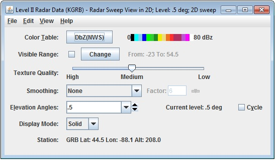

Radar Sweep View Controls
Overview
The Radar Sweep Controls are used to control displays of single level sweeps of radar data, and their display appears in the Main Display window. WSR-88D Level II radar data has three moments or display types: Reflectivity, RadialVelocity, and SpectrumWidth, indicated by the icon in the Field Selector. WSR-88D Dual Pole radar includes these three moments, as well as DifferentialReflectivity, CorrelationCoefficient, and DifferentialPhase.
The controls are identical for 2D and 3D displays:

Image 1: Level II Radar Sweep Controls Properties Dialog
Properties
- Color Table - Shows the active color table and the associated high and low data values in the units of the display. As the mouse pointer is moved over the color bar, the value at a particular color is shown. Right click on the color bar or click on the button that displays the name of the Color Table to make modifications to the color bar. This allows you to open the Color Table Editor, change the range, select other color tables, etc.
- Visible Range - Sets the range of the data displayed. The numbers represent the range of reflectivity values that can be viewed in the Main Display window. This tool is active when the checkbox is checked, if not checked, the default range will be used. To change these values, check the checkbox, and click to bring up a Change Visible Range window, where you can enter your upper and lower bound values.
- Texture Quality - Changes the texture quality of the display.
- Smoothing - Smooths the grid that can be used to smooth contour lines or flow fields in the display. There are seven types of smoothing: None, 5-point, 9-point, Gaussian, Cressman, Circular, and Rectangular weighted smoothers. The smoothing factor can be adjusted for all except the 5-point and 9-point smoothers. The higher the value, the smoother the grid. For the Cressman, Circular and Rectangular aperture smoothing types, the smoothing factor is the radius in grid spacing units.
- Elevation Angles - Determines which of several radar tilts, in degrees, is displayed. Click on the Cycle check box to animate vertically through all available angles. The current elevation angle used to display the data in the Main Display window is listed after Current level. The Cycle option works when the top level of the data type in the Fields section of the Field Selector is selected, which makes all angles available in the display.
- Display Mode - Sets the way the texture is displayed. You can select Solid, Mesh, or Points. This is useful for looking at the structure of the underlying data.
- Station - Shows the station Location ID, Latitude, Longitude, and Altitude.
Menus
Many of the menu items seen utilizing this display are standard options that can be found in the Menus section of the Layer Controls page. However, there are some options that are unique to this display.
The Edit menu has this unique option:
- Levels - Lists the different Elevation Angles for the chosen display. Changes to the Elevation Angle will be applied to the Radar display in the Main Display window.
The View menu has this unique option:
- Use Radar Projection - Re-centers the display and resets the zoom level back to the display's initial settings without changing any other preferences you have modified.